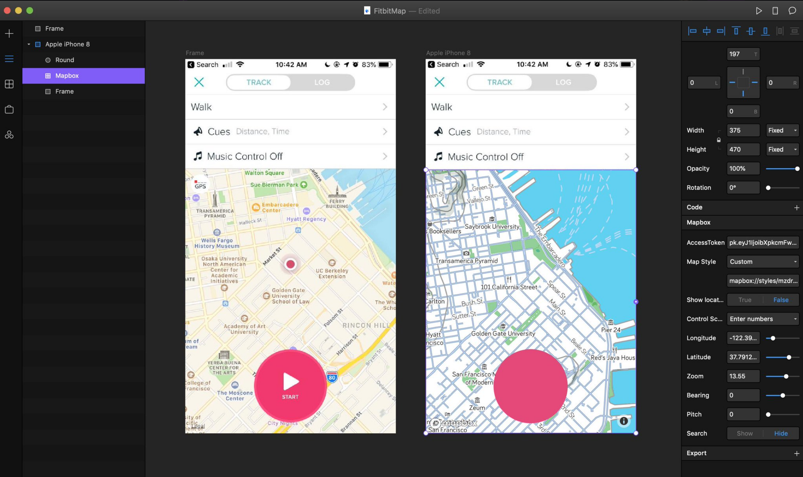
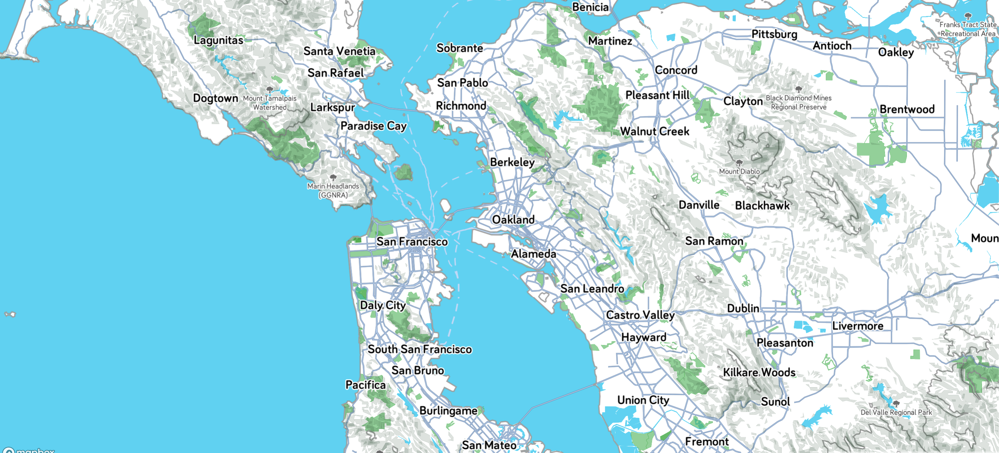
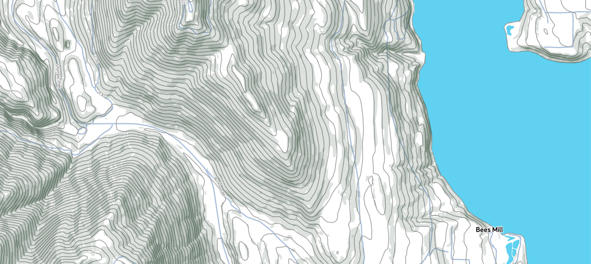
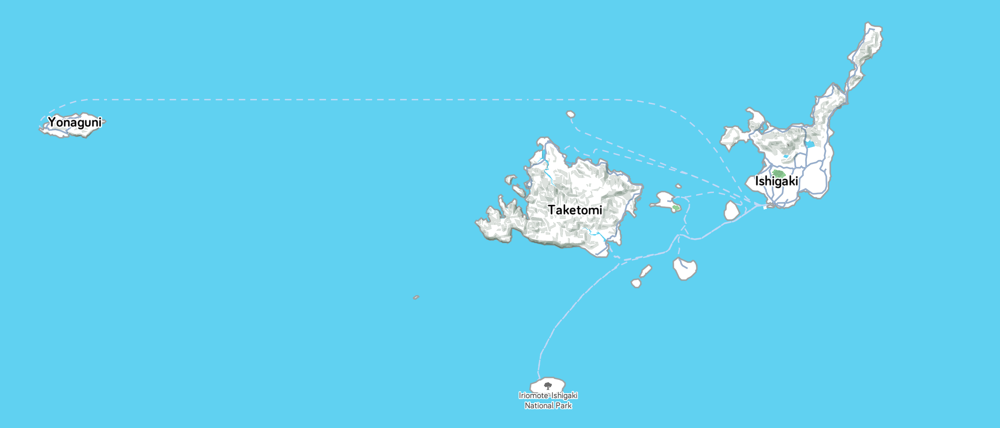

I use FitBit's exercise ecosystem to track my runs. In their app, they use Apple's basemap without any modifications to my knowledge. Apple's standard basemap is a beautiful general purpose map. For most users who are just looking at their route, this might be sufficient. But for someone who is a new to the area or wants to be more strategic about using the map for route planning, Apple's basemap isn't designed for that sort of recreational intensity.

Mapbox released a plugin for FramerX, an interactive protoyping tool built with React.js. It's a brilliant tool that connects designevelopers very well because of its interactive protoyping, sharing capabilities and ease of use. The first "fully fledged" app I built out was a remake of the FitBit app using a Mapbox map that matched the FitBit's apps UI and design guidelines. This made the map feel like it belonged in the app a bit more and allowed me to read the screen as a cohesive piece.
I keep a fairly standard route when I run, only changing depending on time of day--and my arch nemisis: stoplights. I added a route feature to the FitBit app too to get a quick overview of where I'm going. While I only displayed presaved routes in the prototype, I think this feature could grow by putting in route randomizer. This could be a fun way to expore new parts of the city while still going the same distance and general direction you want. I've never designed anything beyond a map before, so this was a fun side project!


